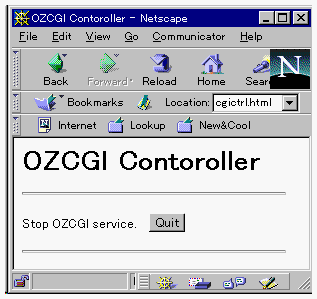

| |
インタラクティブモードでExecutorを立ち上げてサーバを起動した場合には、stopコマンドで非活性化させてください。
ランチャを利用して起動した場合には、$OZHOME/lib/inet/ozcgictrl.html を利用して終了させます。
まず、ozcgictrl.html ファイル中の<base href="http://taro.ipa.go.jp">にサーバホストのURLを、FORMタグのaction="/cgi-bin/oz.cgi"
をそのホストのoz.cgi格納場所に変更してください。
WWWナビゲータでozcgictrl.html開いて、Quitボタンをクリックしてください。

| |